So far throughout DBC we've been learning the Ruby programming language and have learned a number of things about object-oriented programming, etc. What we haven't tackled yet, is working with Rails, or "Ruby on Rails." So below I'll attempt to answer the questions, "What is Rails? What does it have to do with Ruby? And what do we use it for?"
In short: Rails is a library of software that extends the Ruby programming language. It's a framework for building websites and web apps. It combines Ruby with HTML, CSS, and Javascript to create web applications that run on a web server. This classifies it as a server-side, or "back-end" development platform.
The beauty of Rails, and what makes it more than just a software library, is that it has a vast community of developers that value open-source development and sharing their work to make building complex websites and applications easier. This pool of open source software makes Rails a popular tool among tech startups because it allows them to get their products up and running quickly.
Rails has a few guiding principals that make it unique and have been the backbone of its growth in recent years. I'll describe them briefly below, using some wisdom from Rails developer and author, Daniel Kehoe:
1. Rails is opinionated. In other words, there's a "Rails way" of doing things. Following these conventions makes it easier for work to be shared amongst the Rails community.
2. Rails is Omakase. That's Japanese for, "I'll leave it to you." As in, if you were to say to the chef of your favorite restuarant, instead of ordering from the menu, "I trust you, cook me some delicious, and I'll eat it." Basically, the Rails API is the work of a master chef, and if you trust it, it'll serve you well.
3. Don't Repeat Yourself, aka "DRY". It is conventional within the Ruby on Rails community to ensure that code avoids duplication, and is short and simple and easily shared with others.
Of course, this is only the tip of the Rails iceberg. For more information on Rails, check out this tutorial: TutorialsPoint Rails Introduction. Or if you're feeling ambitious, check out the Rails API right here: Rails API.
Oh, and happy coding!

In thinking about how I deal with (or don't deal with) conflict, I seem to find my actions all over the North, East, and South end of the compass to the right. I don't see myself as someone who lashes out at others or tries to "turn the tables," but other than that I can think of many times that I've dealt with conflict on the other side of the compass. My first instinct when faced with a conflict is to avoid it, or withdrawal myself from it. For as long as possible I'll pretend that it doesn't exist, or naively think that it'll go away or solve itself. Obviously this is not a productive form of conflict resolution, but it's a tough habit to break.
As anyone who's been in a relationship knows, conflicts can arise often and it takes strength and patience to resolve them. I'll spare you the details of my own conflicts and instead skip to some things that I've learned from them:
1. Take time to listen.
2. Assume good intentions of others.
3. Be honest with yourself and others about what you're feeling.
4. Don't make it personal.
5. Don't try to win. Sometimes the solution is just that you understand each other. Not that you determine who was right and who was wrong.
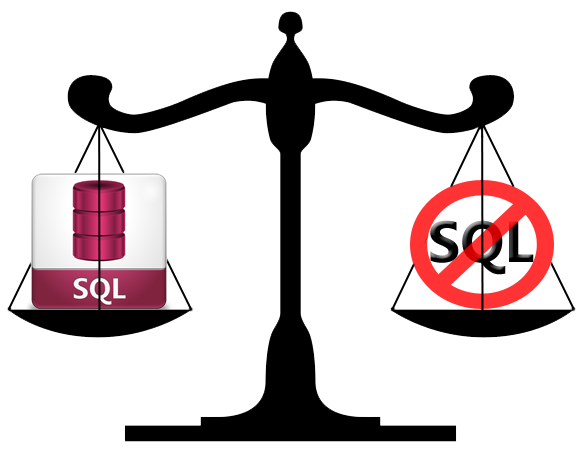
If you search the internet to find the answer to the question of whether or not to use SQL or NoSQL databases, you'll find that there are some very strong opinions on both sides. There are clearly some advantages to using either one, but let's start with some historical context.
Relational databases first started appearing in the 1970's and early versions of the SQL language were developed around that time. Since then, it's been the gold standard for creating and accessing databases. The push for a new system of working with databases actually comes from issues that Google and Amazon had when dealing with huge amounts of data that were unheard of before in the web landscape. Because of this issue of scale, they began working on creating systems for non-relational databases that they believed would be faster and easier to access.
Point of clarification: When people argue SQL or NoSQL, what they're really saying is "relational vs. non-relational." Relational databases include: Oracle, MySQL, and SQL Server, among others. And non-relational databases include MongoDB, CouchDB, Big Table (created by Google), and others.
So what are the arguments for both sides? Advocates for NoSQL claim that JOINS in a relational database is too slow for a large system, and that it doesn't map well with certain data types or heirarcial data. Advocates for SQL would claim that unless you're as big as Google or Twitter, relational databases have no speed issues, and that today's tools like, Oracle, can handle just about any data type.
The moral of the story: If you search hard enough you'll find that level-headed programmers actually believe that both SQL and NoSQL databases are useful and wonderful in their own right. What matters is the project you're working on and what makes more sense for that particular project. A skilled programmer will be comfortable with either, and have the wisdom to know which system is appropriate for their project.
Oh, and happy coding!
The value I chose is "meaningful work." The prompt asked, which times do I feel the happiest, proudest, or most satisfied. When I read that question I immediately thought about the days were I felt like a good teacher and felt like the hard work I had done made a positive impace somewhere. But even on a smaller scale, I get a lot of joy from accomplishing little things like, writing a cool sports stats related program in excel, or making a repair in my apartment, or even just going to the gym. Knowing that I accomplished something positive on a given day brings me genuine sense of joy and satisfaction.
In general, do I live up to the value of doing "meaningful work"? According to the scale we're given:
Disagree 1 ---- 2 ---- 3 ---- 4 ---- 5 Agree
I would say that I fall somewhere around a 3.5 (although this is obviously a difficult thing to quantify). I think the work teachers do is extremely meaningful and I specifically left Engineering to pursue teaching for that reason. But on a day to day basis, do I really make an effort to ensure that my work is meaningful? I know there are lots of times that I don't. There were plenty of days that I just wanted to count down the seconds to the closing bell at 4:00pm instead of thinking of better ways to serve my students. And plenty of days where I just want to sit at home and watch baseball and drink whiskey and then get up the next day and do the same thing.
One thing I've noticed about my own drive to do meaningful work, is that when I'm having a day where I'm feeling unmotivated to live up to this value, it can all be changed by starting with a small act. My most productive days as a coder (in my short time in DBC for example) or as a teacher, or a student, all started with me completing some sort of tiny but gratifying project. That may be putting grades in a grade book, or washing the dishes, or doing 100 pushups. But once I have a small sense of the satisfaction that comes with completing a task that I find meaningful, I find myself on a roll for the rest of the day.
During my time at DBC, I'm going to make an effort to start each day with a small victory, and then ask myself if I'm approaching my work in a way that the process or outcome is meaningful. And hopefully the answer will be YES, or that I'll have the strength to redirect myself.
For your programming convenience, Ruby has 4 distinct types of variables: local, global, instance, and class. Each of these types has a different scope which defines where in a program a variable can be accessible. Let's start with the variable with the largest scope (global) and work our way down to the variables with the least accessibility.
Global variables can be accessed from anywhere in the program. To declare a global variable, it must begin with the dollar sign ($). For example, the variable $tax_rate, is global and can be accessed anywhere in a program. Using global variables is generally discouraged except when totally necessary because it can make tracking bugs within your code difficult.
Class variables cannot be accessed anywhere, but can be accessed anywhere within a given class. The difference between a Class variable and an instance variable is that a Class variable is shared amongst all instances of a class. Therefore, when it is changed for one instance, it is changed for all of them. They are declared by using @@, for example: @@color = "red".
Instance variables are also used within a class, but this time, the value of the variable can be unique to that particular object or instance of that class. This means that changes made to this variable, only affect the particular object being manipulated. They are declared using just a single @.
Local variables have the smallest scope and can only be called within the method or loop with which they are declared. Let's look at an example where we create objects using a class called Vehicle. We'll use all four of types of variables so you can see how they work:
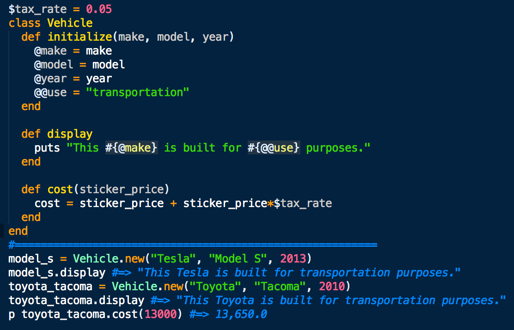
You'll notice we're allowed to access the global variable $tax_rate, despite that it is declared outside the Vehicle class. Also, the class variable, @@use, will be the same for any instance of Vehicle class, and the local variable cost, cannot be accessed outside of the cost method.
And just for fun, here's a table of pre-defined global variables that you can use to get information about the Ruby environment (courtesy of techtopia.com):
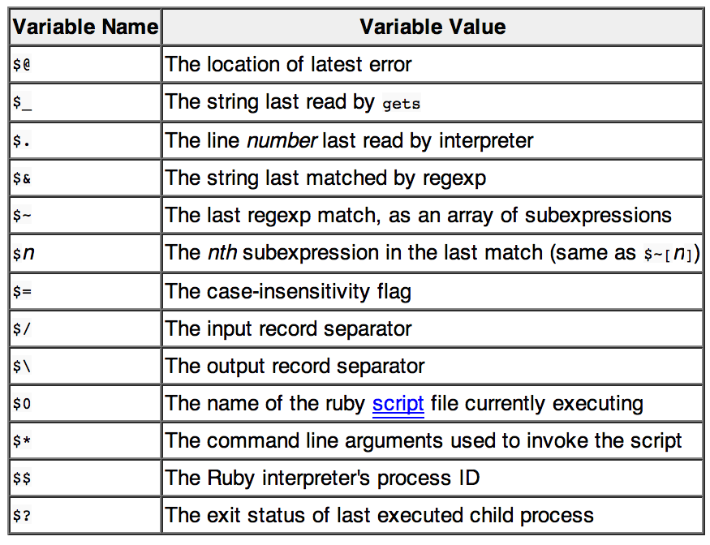
To learn more about variables and scope, check out the Resources page for more Ruby info or tools.
And happy coding!
Stereotype threat is when a person is a risk of confirming a negative stereotype about one's group. The term was first used in the research by Steele and Aronson in their 1995 paper detailing experiments where Black college freshman performed more poorly on standardized tests than White students if their race was emphasized before or during the test.
As a White male, I have to accept that I've lived in a world where it's easy for me to live a life of privilege. So I will not attempt to speak to my own experiences with stereotype threat, despite that everyone has been subject to other people's biases one way or another. I can however speak about how I've seen my high school students in Chicago become subject to stereotype threat.
For six years I've taught math at schools in urban areas with a disproportionate amount of youth who have lived in poverty, or in neighborhoods mostly known for their criminal or gang related activity. Many of them walk into my classroom with the idea that they were somehow designed to underperform, and that it's not something they can control. And that this idea of going to college that their teachers keep talking about, is just something for someone else. I've seen a lot of kids ignore this threat and accomplish great things, and I've seen kids who couldn't overcome what they thought was a genetic or social disposition to not achieve and drop out of school. It's heartbreaking to see, and is one of the things that makes teaching such a tough job to make sustainable.
As far as how this might apply to anyone, or how it may present itself in the tech world: I think we can all be better off if we just make an effort to understand our own biases and truly get to know someone before we make decisions about his/her character. And really know when you don't really know someone, or when you might not really know yourself.
An essential part of working with the Ruby programming language is understanding the relationships between classes, objects, instances, and methods. To try and better understand them and the heirarcies associated with them, let's us an analogy from the animal kingdom, and our furry friends, cats and dogs.
Cats and dogs can both be described as mammals. Therefore, any properties that mammals have, cats and dogs (despite their differences) must have all those properties. For example, they are: warm-blooded, breathe air, and produce milk, etc. But still, not all dogs are the same, and not all mammals are the same. So let's write a program that define's what these animals are like and hopefully it'll act as a model of how different objects in Ruby are formed. See the code below:
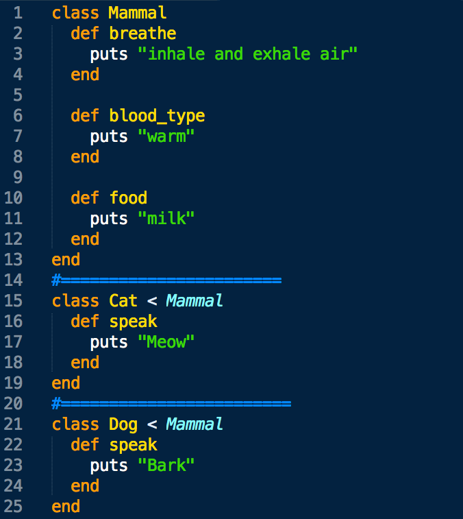
So what we've done is we have created the class "Mammal" that has methods that tell it to have warm-blood, breathe air, and produce milk. Then we have two separate classes ("Dog" and "Cat") that get to inherit all the properties of Mammals, but they have their own methods that show how they speak differently. Cat and Dog are now subclasses of the superclass: Mammal. If that is in fact true, the following code should show us that cats and dogs have access to the methods in Mammal as well as their own class:
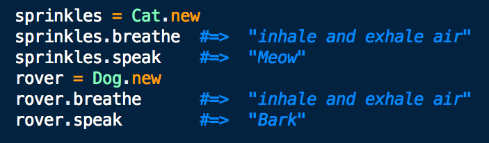
So far we've got Mammals as a superclass, and Cat and Dog are both subclasses. So what does that make our friends Sprinkles and Rover? Sprinkles is an instance of the Cat class, and Rover is an instance of the Dog class. Let's take it a step further and create a breed of dog named German Shepherd, and determine if that breed is fit for guard duty:
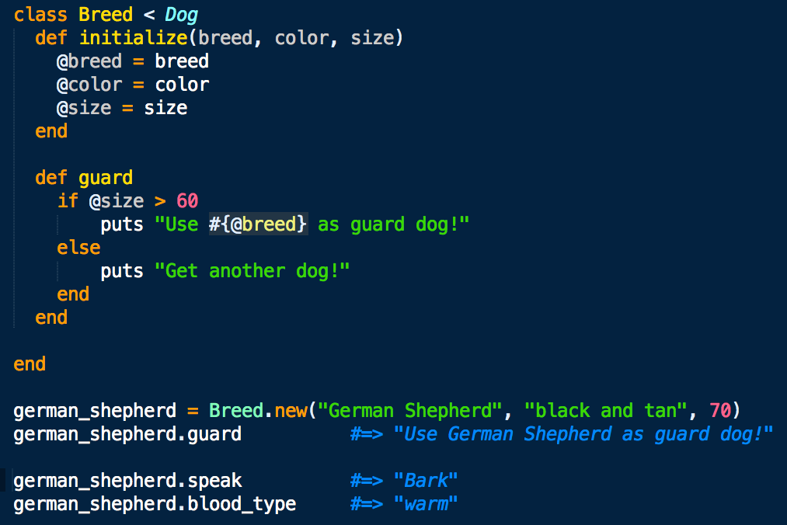
So now we've created another subclass called "Breed" that has access to all the methods in the Dog and Mammal class. And we've created an instance of breed called german_shepherd that has the input parameters: breed, color, and size. The "@" symbol, signifies that we've created an instance variable. Instance variables in this case, are ways to give values to the instance, german_shepherd, but not to the entire Breed class. In the code above you can see we were able to access the guard, speak, and blood_type methods thanks to our class heirarcy and inheritance.
To learn more about Classes, check out the Resources page for more Ruby info or tools.
And happy coding!
As part of our dev education, we're asked to pair up and solve problems with a partner. I can see how this will be a meaningful part of our next career, and I can imagine that we'll be asked to work in such a manner many times. However, at this point in my journey to becoming a developer, working with a partner feels a lot like being the guy at the dance with two left feet. I'm essentially doing the best I can to not embarrass myself while stumbling, going the wrong direction, getting off beat, and having to apologize to my dance partner for what they've just been roped into. Luckily, so far I've had nothing but kind and accomodating dance partners.
One of the more challenging aspects of pairing in this phase of our educations to me is trying to recreate the "driver and navigator" structure. Is the driver/navigator system a good idea if neither of you really know where you're going? A lot of times during GPS challenges my partner (and buddy, Edgar) and I will just jump into things randomly as we think of an idea and experiment, and who's driving or navigating is pretty nebulous. Maybe this is called "novice and novice" pairing? Despite this not being the desired method for pairing at DBC I feel like I've learned quite a lot from having this sort of looseness and freedom.
Pairing has also forced me to reflect on my thinking style more and consider how I learn. Maybe this will change as I become a more experienced programmer, but I often feel like I need more time to process things to really tackle a challenge. And I have a hard time doing that if I also have to concurrently navigate a social situation.
Reading feedback has been really helpful in showing me what a good partnership looks like. I have to admit though, I do get a little nervous right before I read the "I felt respect by my partner __". I don't mind so much if someone walks away from a pairing session thinking I'm a lousy programmer, but I would never want them to think that I didn't respect or appreciate them or their work. So to future and past pair-ees, cheers to some good times together. I look forward to learning from you!
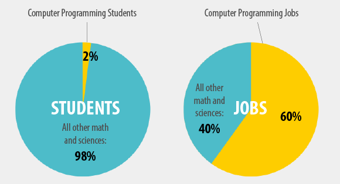
Six years ago I became a math teacher because I thought math was cool and I wanted teenagers who were about to embark on a journey to college to think the same thing. I also felt it was my duty to do so because I had been on the other side and seen what our job market looks like for people who struggle with math. I wanted kids to know that it's a powerful tool and that it can be an enjoyable part of their future career. I'm leaving teaching now to do some of my own learning, but I see the same sort of phenomenon happening, in that there is another powerful tool out there (coding) that kids aren't equipt with.
We already live in a time where the tech world has a shortage of talent to fill their job openings (hence the existence of DBC) and it seems that this will continue until the average public school realizes that coding is something they should be teaching their kids. My fear is that kids who are in school now are in this unfortunate era where coding skill has become essential to our society, but schools haven't figured out they need to teach it yet. They may find themselves, in a decade or so, being the only people looking for jobs who don't have experience with coding.
This ill timing reminds me of my dad, who is a brilliant guy and a talented engineer but was educated in a time before people realized that typing would be an essential skill for the future. Despite his years of work experience and vast intelligence he still types with his two index fingers and it takes him forever to write a simple email!
This isn't a life or death situation for him, and not being able to code probably isn't for my students either, but it stinks to know how much more powerful they could be if they could code. It takes a long time for our schools to adapt to changes in our economies and my students might unfortunately be in high school at just the wrong time.

Writing a loop in a computer program allows you to execute a particular block of code a predetermined number of times, or until a certain condition is met. Ruby has a vast array (no pun intended) of methods with which to create loops. For starters, there's: Array#each, Array#select, "while", "do", "for in", "until" and even "retry." Which one you chose is up to you and depends on the conditions driving your iterations. Let's look at some basic examples of a couple of these to get a feel for how and when they're used.
Let's start with the classic While Loop which has a similar form in the JavaScript language. In the example below the condition after the while loops tell the computer to execute the following code for as long as the value of x is less than 5. In this case, it prints the message, "This will print 5 times!", you guessed it, 5 times.
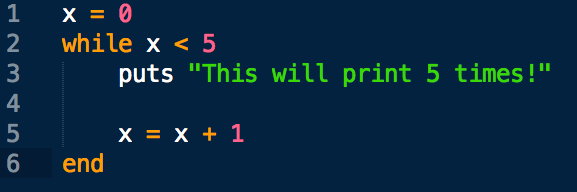
The command "until" is differs from the while loop because it runs while the condition given is FALSE. Check out the example below. This will still print the message 5 times, but now stops the loop when x has become 5, therefore making the condition no longer false.
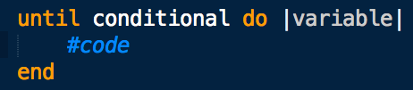
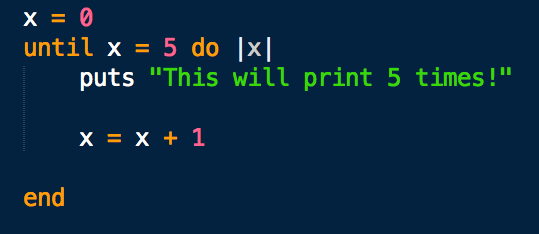
Now, let's look at a loop that iterates over the elements of an array. Let's say we had an array of last names and wanted to add the prefix "Mr." to each one. For this we could use Array#each. Take A look at the example below.
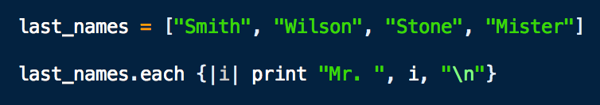
The result should look like this:
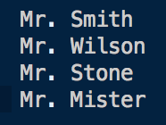
With so many options for writing loops in Ruby this is only the tip of the iceberg. Check out the Resources page for more Ruby info or tools
And happy coding!
Javascript has become the premier client side language for web development and manipulating the contents of a page in your browser. In this post, we'll examine:
Why is Javascript popular?
What is it used for?
What makes it so cool?
But first, let's see what the general googling public thinks of it:
So I guess we can confirm that javascript is indeed popular, and also that many people find it confusing or hard to learn. It's actually pretty simple and powerful and allows us to do all sorts of cool things on the web (for example: the twitter feed over to your right. ==>
But first, a little history lesson:
Javascript was originally developed by Netscape (remember those guys) for use in their browser Netscape Navigator when they were competing from browser dominance with Microsoft Internet Explorer. It was originally designed to be a lightweight complement to Java that would appeal to nonprofessional programmers and amatuer web developers. It was designed to allow for the manipulation of elements on a page in the browswer and quickly gained widespread use and attention for its ease of implementation. Microsoft eventually gave in and introduced JavaScript support in its browser, Internet Explorer 3.0, and now JavaScript has industry wide support on all browsers.
Contributing to its popularity are the numerous tools developers can use to write and debug code in JavaScript, as well as, additions to its capabilities via jQuery, Node, and AJAX.
AJAX is the lovely little tool we can thank for the making web a much less static-y place. It allows for automatic refreshing and updating of pages and databases without leaving the page. We see this in action when someone posts something on facebook, or when our twitter feed updates without us telling it to.
Thanks to the addition of Node.js, JavaScript can now dip its toes into the server side world of web development instead of having to rely on other technologies like PHP.
Fun Facts About JavaScript
1. It was originally given the name "Mocha"
2. It supports something called Duck Typing
3. The JavaScript interpreter was originally called "SpiderMonkey", now it's known as "Rhino".
4. The widgets on your dashboard are made using JavaScript.
Check out the Resources page for more JavaScript info or tools
And happy coding!
According to thelearningweb.net and Professor Anthony Gregorc, I have thinking styles that can be can be described as Concrete Sequential and Concrete Random.
Concrete Sequential Thinking: Based in reality. Information is processed in an ordered, sequential, and linear way.
Concrete Random Thinking: Information is processed through experimentation.
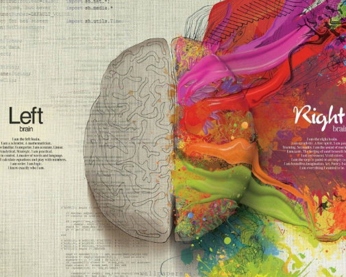
These results come as no surprise to me when reflecting on how I've made choices in the past and how I've approached problems and made decisions. I like to think of myself as having a "mathematical mind" and I do not let my emotions make decisions for me. My appreciation of objective thinking and experimental problem solving led me to studying Engineering in college, and also to becoming a math teacher later on. And now, it's led me to coding. I really love seeing a solution come together sequentially when I'm coding. The problem solving process really is a lot of fun for me. I've also learned much of what I know about coding with Ruby or JavaScript by experimentation. I find the description of the left brain thinker to be pretty close to how I feel my brain works. And I believe, for better or worse, that my thinking is pretty lopsided to the left.
As a math teacher these two thinking styles also present themselves on a daily basis when looking at the way my lessons are created and presented. Part of teaching Geometry is teaching proofs, or in other words, how to linearly and logically (with precision and mathematical justification) get from point A to point B. This is essentially an attempt to teach my students how to be concrete sequential thinkers.
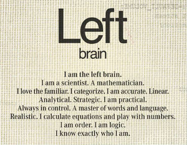
The other cornerstone of my lessons is forcing students to use experimentation to find a solution. Making mistakes and taking mysterious routes to a solution are encouraged. When my students get stuck on a challenge problem and ask if doing this or that works, my response is often, "I don't know. Try it. See if the answer makes any sense." This answer frustrates them, but normally through this experimentation they discover something deeper about the problem and how the numbers work instead of just knowing the process of solving that particular problem.
As the Gregorc survey mentions, each learning style can be effective in its own way and no style should be deemed superior to another. I can see how any of the four thinking styles can be well suited for learning coding through Dev Bootcamp and I'm sure there are developers and bootcampers who are all over this spectrum. I think that by understanding these learning styles you can create an advantage when working with someone of an opposite style. By doing so you can have a group of people using multiple ways of thinking to look at the same problem and attack it from all angles. As long as everyone in that group can value other thinkers' ideas along with their own, this can be a very powerful dynamic for designing and problem solving.
The biggest struggle for me so far during Phase 0 has not been learning the material, but finding the time to maximize my learning and not just learn enough to complete the tasks. Because I'm still currently working full time it's hard to find time to do the extra things I need to do to commit my learning to memory. With more time I could do more research on the topics that I haven't fully grasped yet, or I could help solidify my learning by getting more practice and repetition.
Also, just for fun, I'd like to point out that sometimes I feel like my thinking style is not unlike Homer Simpson's.
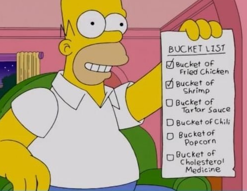
If you're like me, when you first had to use margins and padding in CSS you had one or all of the following questions pop into your mind:
Which one is inside the border?
Aren't they the same thing?
If I change one, does it affect the size of the other?
Why can't I get some padding/margin above or below this element?
Let's see if we can address some of these questions. Let's start with a visual...

This is how your Chrome Dev Tools will display the box model for an element that you've selected. Let's identify a couple important things. For this div, There's a content area of 920 x 44 pixels. There is padding of 10 pixels on the top, bottom, left, and right. And there are margins of 10px on each side. The border region (colored in yellowish) is left blank indicating that there is no border for this div. Let's see what this div actually looks like then.

This is an early version of the footer for this blog site. You'll notice it's color-coded just like our box model. The content area is in blue, the padding area in green is separating the content from the edge of the div, and the orange margin is separating the div from other outside elements.
Here's the important thing to remember:
Padding: Separates inner content from the borders of the div
Margin: Separates the div from other elements
Time for a pop quiz. Take a look at the 5 divs in the image below. Take a second to identify which divs have margins and padding and which do not:

Hover your cursor below to reveal the answers...
1. No padding, no margins, 1px red border 2. No padding, 5px margins on all sides, 1px border
3. Padding of 5px on all sides, no left/right margin, no border4. Padding of 5px, margin of 5px, no border 5. Padding, margins, and borders all around!
For more information on margins, borders, and padding and other fun stuff, click on the Resources link at the top of the page.
And happy coding!

In terms of content, FiveThirtyEight is like a dream come true. For the most part, it's a cross between my two favorite things: math and sports. And oh yeah, it's hosted by my intellectual hero, Nate Silver. I'm a big fan of Nate Silver's book, "The Signal and the Noise," and I've always dreamed of being able to get my news and sports updates from an author that loves charts and graphs as much as I do.
There's also something about the simplicity of the design and the way the information is organized on the page that I find comforting. The featured article is in plain sight at the top, the nav bar allows you search for an article of interest based on the topics (which are color coded) or you can search by the author with the sidebar on the right. The look is very clean and organized and simple, which I find appealing (I think you'll notice that as a theme when you see my next two choices).
After spending time on the site I feel a little anxious that I've just wasted so much time reading articles that I had no intention of reading, but the content is so rich with valuable information that it is not time spent that I regret.

Toothpaste for Dinner is a classic webcomic that's been around forever it feels like. Again, the simplicity of the site is appealing but also the simplicity and dryness of the content speaks to my strange sense of humor. The site has changed very little over the years which adds a nice nostalgic element to it.
The site has gotten a little messier with adverts all up and down the left side of the page and the social networking buttons appended to each cartoon. The extra material makes scrolling and navigating a little clunkier than it used to be, but the author has found new ways for you to search for archived material and randomly upload cartoons from the past years if you just can't get enough laughter.

I know what you're thinking, I ran out of ideas so I just picked the most recognizable website on the planet to save time. Not true! There's something magical about a company that has endless financial resources and technology (most of which it has created itself) and still has a homepage that has only 1 ugly logo and a search bar on a white background. Obviously Google has progressed to offering tons of services and products to people beyond its search algorithm, but it's still the only thing they allow to be their centerpiece when you visit, and all other items are hidden carefully at the top and bottom of the page. This kind of aesthetic is the opposite of sites like Yahoo! or CNN and is part of what makes it such a great company. I'll spare you the list of Google's products and services since we're all familiar with them and just end this paragraph with a tip of my cap to their always surprising and delightful Google doodles that I'm often treated to when I sit down at my desk at work and open my computer for the first time.

I've been a high school Math teacher for 6 years now. It's the hardest thing I've ever done, but has also been the great joy of my life so far. I've met so many amazing kids and had an opportunity to share my love of math and science with any kid that'll listen.
Every group of kids I've taught in that six years has had a completely different character and mindset, which is why I bring this up. I often wonder at the end of a long school day things like, "Why is my 2nd period class so much more fun to teach than my first? Why are they learning more? Why does Eder work so hard even though he already has an A? Why is my 3rd period so quiet?"
The answer to all these questions is that culture matters. As a teacher I've seen a group of 30 kids who have a laundry list of struggles to worry about become energized and unified by the passion of a couple hard working students and acheive things that they could not have otherwise. This is what drew me to Dev Bootcamp. It feels like it was built by teachers. And by teachers I mean, people who have found a way to communicate their passions with a large group and create a sense of unity. When I read about dev bootcamp's curriculum or the structure of the classes or the emphasis on social learning (I'm terrified first of all) but I also feel like it was a program designed by lovers of teaching not just lovers of code.
Now I'm going back to being a student again and while I definitely have "imposter syndrome," as Shereef mentioned, I'm comforted by the fact that there's an emphasis on community and embracing our fears together.
I feel like Luke Skywalker when he picks up the lightsaber for the first time and doesn't really know what to do with it (and is at great risk of chopping his own arm off at any second). But he's on the verge of having access to a great power, if he's willing to put in the work and recognize his own weaknesses and turn them into strengths with the help of others.
I've had the pleasure of watching a handful of my students accept this challenge over the last few years, and they've inspired me to do the same. So I'm switching desks.
May the Force be with us all.